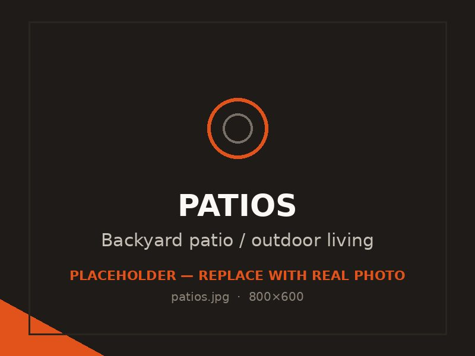

Patios & outdoor living
Backyard patios, fire-pit pads and seating areas designed around how you actually spend time outside — finished to handle Utah sun and snow.

A good patio turns a bare backyard into the part of the house everyone actually uses in the summer. With the long, dry, sunny stretches the Tooele Valley gets, an outdoor space earns its keep — and concrete is the most durable, lowest-maintenance way to build one.
We design patios around your yard and how you'll use it: morning coffee, evening fires, room for a table and chairs, or a full outdoor living setup. Then we build it to last through the freeze-thaw that wears down lesser work.
Before we pour anything, we look at how the sun and wind move across your yard, where the doors and sightlines are, and how big the space really needs to be. A patio that's too small never gets used; one that's poured in the wrong spot bakes in the afternoon sun. Getting the size, shape and placement right is what makes it a space you live in.
Concrete gives you more looks than most people expect. A broom finish is the practical all-rounder with good grip. A smoother trowel finish reads cleaner and more modern. Exposed aggregate shows the stone in the mix for texture and traction. And a stamped or colored border can dress up the edges without the cost of stamping the whole slab.
We'll walk you through which finish suits your style, your budget and the way the patio will be used.
Tooele patios sit under intense UV in summer and snow in winter, so the build has to handle both. We use the right mix and base prep, set the slope so water and snowmelt drain off instead of pooling, and recommend sealing on decorative finishes to protect the color from the high-desert sun.
A patio is often just the start. We pour pads for fire pits, grills and outdoor kitchens, step-downs and landings that connect levels of the yard, and walkways that tie the patio back to the house or a shop. Planning those at the same time keeps everything level, consistent and joined cleanly.
Size is the biggest driver, but finish matters too — a plain broom patio costs less per square foot than a fully stamped and colored one. Site access, grading and any tear-out of an old slab also factor in. We give you a clear written estimate after seeing the space, with the finishes priced out so you can choose what fits.
Common questions
Broom and exposed-aggregate finishes hold up well and stay grippy when wet, which matters with our snow. Smooth and stamped finishes look great and work fine too, but we'll usually recommend sealing them so the surface and any color stand up to strong summer UV and winter moisture.
It depends on what you'll do out there. A small coffee-and-chairs space can be modest, while room for a dining table plus a separate seating or fire-pit area needs more square footage. We'll help you size it so it's big enough to use comfortably without overwhelming the yard.
Yes. We can extend or wrap an existing patio and tie the new concrete in with a clean control joint. Matching an older slab's exact color and finish isn't always perfect, but we'll set expectations honestly before we start.
All concrete can crack, which is why we cut control joints to guide where it happens and keep those cracks tight and straight. With proper base prep, the right thickness and good joints, a patio stays sound and the joints simply become part of the look.
Absolutely, and it's a popular way to get a decorative look for less. A stamped or colored border around a broom-finished center gives you definition and style while keeping the bulk of the slab economical.
Related work
Stone, slate and brick looks in colored, stamped concrete.
Paths that connect the patio to the house, yard or shop.
The valley's workhorse slab, built for freeze-thaw.
Free, no pressure
Call or text for the fastest answer — most estimates are scheduled within a day.
(385) 469-5163